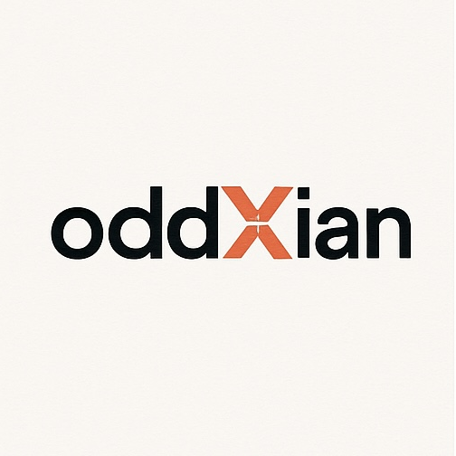

Apologetics IllustratedBlog← oddXian · Theology · Illustrated Systematics
Defending the faith in pictures: arguments answered, objections met.
This series is the companion to Illustrated Systematics, and a different kind of work. The systematics plates set out biblical theology and doctrine in order; these plates take up a charge against the faith and answer it. Each volume is a ten-panel plate built around one framing objection, paired with a companion narrative that states the objection in its strongest form and carries the full defense, claim by claim. Volumes are drafted from the arguments-frameworks corpus in this repository and published here on approval.
The charge: "The Bible endorses slavery." The plate already exists as a teaching graphic; its audit and companion narrative are the pilot work of this series.
Planned
The charge: "If God exists, He would make it obvious."
Planned
The charge: "Reason needs no God."
Planned
The charge: "One argument is never enough."
Planned
The charge: "Every worldview just assumes its starting point."
Planned
The charge: "The universe just is."
Planned
The charge: "Deep time settles it."
Planned